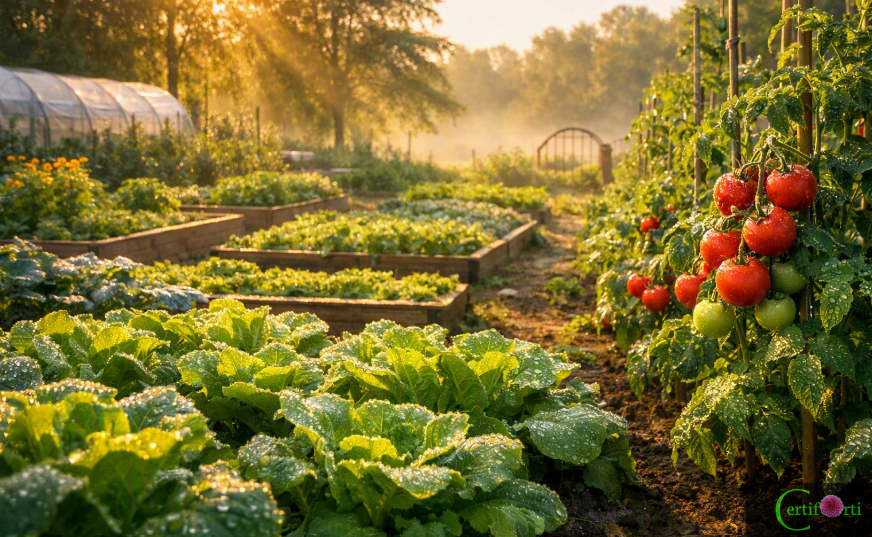
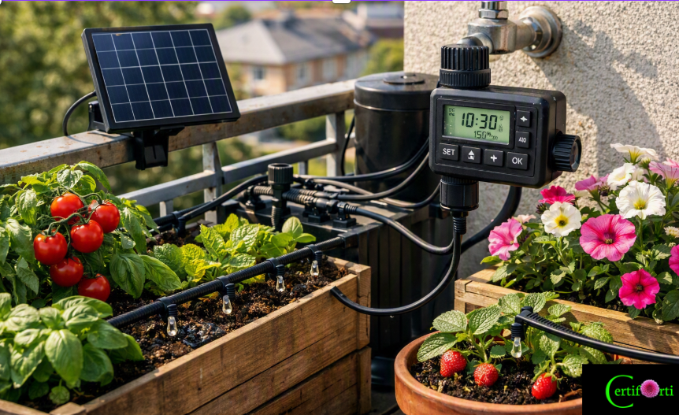
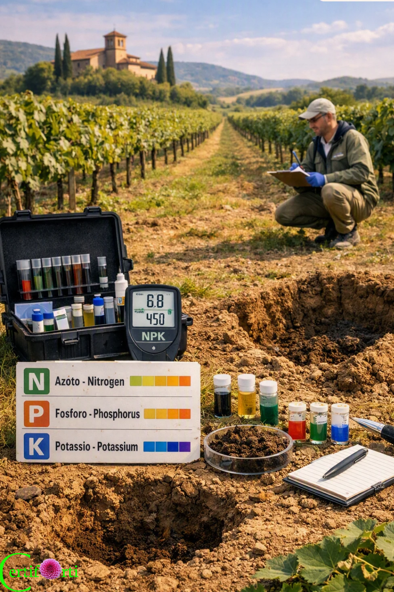
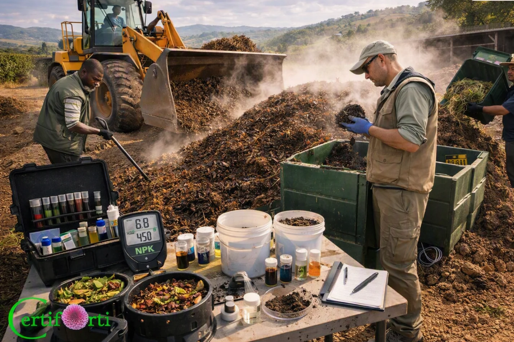
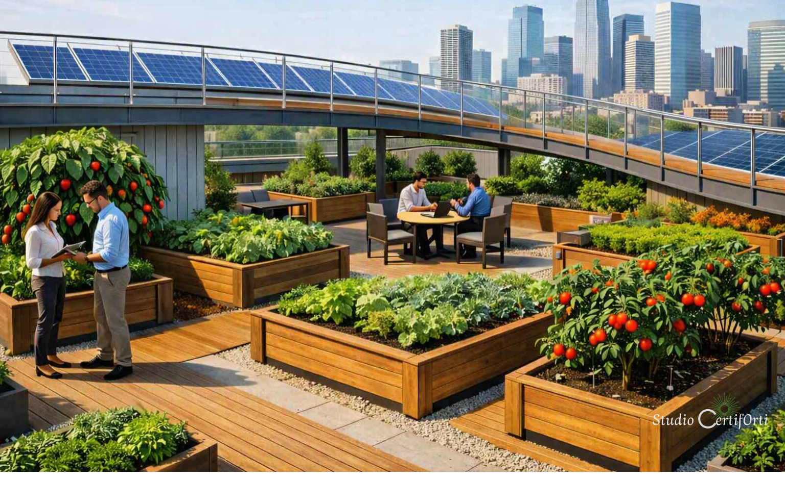
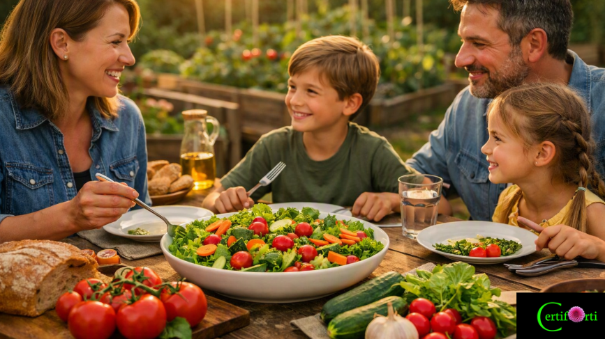

Agronomia urbana, rigenerativa e sicurezza alimentare per città e cooperative
Studio CertifOrti è il tuo partner professionale per agronomia urbana biologica, rigenerazione del suolo, supporto diagnostico, HACCP e consulenza ISO per cooperative agroalimentari e realtà HORECA.
- Agronomia urbana biologica: progettazione di orti urbani e sistemi produttivi resilienti.
- Agronomia rigenerativa: suolo vivo, biodiversità e cicli nutrienti sostenibili.
- HACCP & ISO: sicurezza alimentare e conformità normativa per filiere complesse.

Chi Siamo
Studio CertifOrti nasce dall’incontro tra agronomia urbana, ricerca sul suolo e consulenza normativa. Lavoriamo con cooperative agroalimentari, amministrazioni locali e realtà HORECA per costruire sistemi produttivi sostenibili, sicuri e certificati.
Visione
Portare l’agronomia urbana e rigenerativa al centro delle politiche alimentari, con progetti che uniscono produttività, biodiversità e inclusione sociale.
Metodo
Analisi del suolo, diagnosi agronomica, progettazione integrata e accompagnamento normativo continuo, dalla fase di studio alla certificazione.
Partner
Cooperative agroalimentari, enti pubblici, associazioni, ristorazione collettiva e realtà HORECA che vogliono coniugare qualità, sicurezza e sostenibilità.
Servizi
Offriamo un portafoglio completo di servizi per la progettazione, gestione e certificazione di sistemi agroalimentari urbani e cooperativi.
Agronomia urbana biologica
Progettazione di orti urbani, giardini produttivi e sistemi agroecologici in contesti cittadini, con attenzione a suolo, acqua e biodiversità.
Agronomia rigenerativa
Piani di rigenerazione del suolo, rotazioni colturali, coperture vegetali e pratiche che aumentano fertilità e resilienza degli ecosistemi produttivi.
Supporto diagnostico
Analisi agronomiche e interpretazione dei dati per individuare criticità, definire interventi mirati e monitorare l’evoluzione dei sistemi.
HACCP e sicurezza alimentare
Redazione, revisione e implementazione di piani HACCP per cooperative, laboratori e strutture HORECA, con formazione operativa del personale.
Consulenza ISO per agroalimentare
Accompagnamento verso certificazioni ISO (qualità, ambiente, sicurezza alimentare) con focus su filiere cooperative e sistemi urbani.
Progetti ambientali e sostenibilità
Progettazione di interventi ambientali, piani di sostenibilità e reportistica per bandi, finanziamenti e rendicontazione sociale.
Progetti
Alcuni esempi di progetti seguiti da Studio CertifOrti, tra agronomia urbana, rigenerativa e sicurezza alimentare.

Orti urbani cooperativi
Progettazione e gestione di orti urbani condivisi, con cooperative e cittadini, per filiere corte e educazione alimentare.
ISO per filiere HORECA
Percorsi di certificazione ISO per realtà HORECA che vogliono valorizzare qualità, sicurezza e sostenibilità dei propri servizi.

HACCP per cooperative agroalimentari
Implementazione di sistemi HACCP integrati per cooperative che gestiscono trasformazione e distribuzione di prodotti alimentari.

Rigenerazione del suolo urbano
Interventi di rigenerazione del suolo in aree degradate, con tecniche agroecologiche e monitoraggio continuo.
Certificazioni ISO
Supportiamo cooperative e strutture HORECA nel percorso verso le principali certificazioni ISO, integrando requisiti normativi con pratiche agronomiche sostenibili.
ISO 9001 – Qualità
Sistemi di gestione per la qualità orientati a processi agroalimentari cooperativi, con attenzione a tracciabilità e soddisfazione del cliente.
ISO 14001 – Ambiente
Gestione ambientale integrata, con focus su uso del suolo, risorse idriche e impatti delle filiere urbane e cooperative.
ISO 22000 – Sicurezza alimentare
Sistemi di gestione per la sicurezza alimentare che dialogano con HACCP e specificità delle filiere cooperative e HORECA.
Team
Un team multidisciplinare che unisce agronomia, analisi del suolo, sicurezza alimentare e consulenza normativa.

Agronomia urbana
Progettazione di sistemi produttivi urbani, orti cooperativi e paesaggi commestibili.
Suolo e rigenerazione
Analisi, diagnosi e piani di rigenerazione del suolo per filiere resilienti.

HACCP & ISO
Consulenza normativa, piani HACCP e percorsi di certificazione ISO per cooperative e HORECA.
Preventivi
Raccontaci il tuo progetto: ti risponderemo con una proposta su misura per le tue esigenze agronomiche, ambientali e normative.
Richiedi un preventivo
Contatti
Studio CertifOrti – agronomia urbana, rigenerativa, HACCP e consulenza ISO per cooperative agroalimentari e HORECA.
Dati di contatto
Email: studio.certiforti@gmail.com
Telefono: +39 376 018 9521
Sede
Studio CertifOrti
Via Tosco Romagnola 185
56025 Pontedera (PI)
Social
Facebook, Instagram, TikTok, YouTube (Studio CertifOrti)